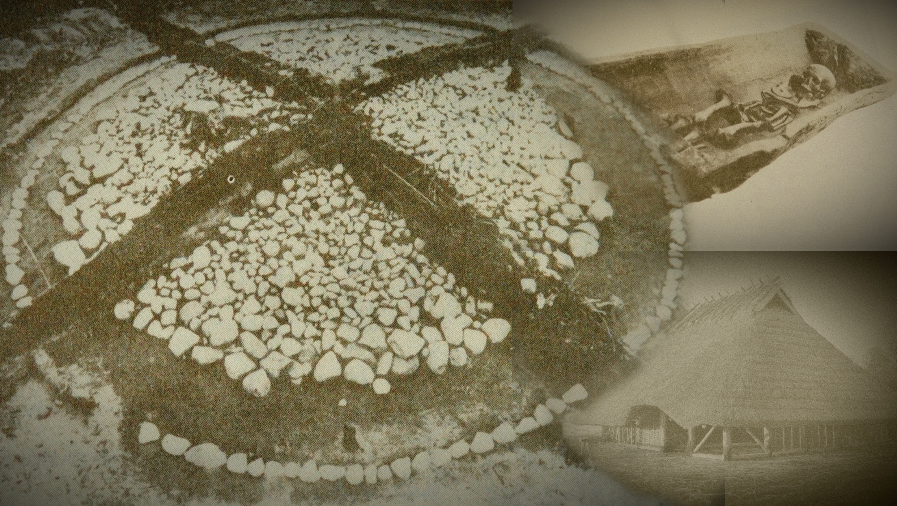

Rakas ystävä, kuuntele nyt tarkasti – älä vilkuile kelloa, älä avaa puhelinta. Tämä ei ole tavallinen raportti. Tämä ei ole tieteellinen tiivistelmä. Tämä on se hetki, jolloin menneisyys astuu huoneeseen, katsoo sinua suoraan silmiin ja sanoo: ”Minä olen täällä. Olen aina ollut täällä. Ja minä olen sinä.”
KADONNEEN SUKUHISTORIAN METSÄSTÄJÄ
H1‑T16189C! – Verilinjan seikkailu ajassa
LÖYTÖ – Sinä olet elävä näyte
DNA‑näytteesi ei ole pelkkä laboratoriotulos. Se on muinainen arkeologinen löytö, tuhansien vuosien hiljainen todiste, joka nousi esiin modernin tieteen kaivauksilla.
H1‑T16189C! on koodinimesi harvinaiselle verilinjalle. Vain kourallinen eurooppalaisia naisia ja jokunen mies elämänsä aikana kantaa tätä tarkkaa varianttia. Sinä olet yksi heistä.
Kuvittele hetki: arkeologi polvistuu multaan, sivellin kädessä. Hän harjaa varovasti savea syrjään ja löytää luunsirun – mitokondrio‑DNA laboratoriossa vastaa täsmälleen sinun solujasi. Se ei ole sattuma. Se on yhteys.
Sinun veresi on viimeinen lenkki tässä tuhansien vuosien ketjussa. Ketju, joka alkoi mahdollisesti Franco‑Cantabrian refugissa Pohjois‑Espanjassa tai Lounais‑Ranskassa – ja joidenkin tulkintojen mukaan vielä kauempana, Anatolian savitaloissa, joissa esiäitisi hautasivat läheisensä lattian alle, jotta he pysyisivät lähellä eläviä.
Tämä veri kulki Atlantin karulle rannikolle, missä megaliittien rakentajat nostivat valtavia lohkareita Poulnabronen kaltaisiin dolmeneihin. Se jatkoi goottien vaellusvaiheeseen Puolan Masłomęczin kumpuihin ja lopulta viikinkiajan Gotlantiin, Kopparsvikin hautausmaalle, hopean ja merenkulun maailmaan.
Tuo ketju ei katkennut. Se jatkui sukupolvi sukupolven jälkeen, vuosisata vuosisadan jälkeen – hiljaisena, katkeamattomana, kunnes se saapui sinuun.
Et ole vain lukija. Olet löytö.
Ota arkeologin hattu ja laita se päähäsi. Seuraa jälkiä, koska matkamme alkaa. Nyt me kaivaudumme syvemmälle — emmekä lopeta ennen kuin jokainen vihje on tutkittu.
Johdanto
Sinun veresi tarina ei ala tästä. Se on kulkenut tuhansien vuosien
halki, yli merien ja kivikehien, läpi sukupolvien jotka eivät
koskaan tienneet nimeäsi — mutta kantoivat samaa hiljaista merkkiä.
Analyysin ydin
mtDNA-linja: H1‑T16189C!
Tutkimusmetodi: arkeogenetiikka
Lähteet: vertaisarvioidut julkaisut
Tämä kertomus ei korvaa perinteistä sukututkimusta, vaan täydentää sitä.
Kirkonkirjat ja arkistot kertovat nimistä, paikoista ja vuosiluvuista —
mutta ne vaikenevat siitä, mitä tapahtui ennen kirjoitettua aikaa.
Tämä tarina alkaa siitä, mihin asiakirjat loppuvat.
Tämä on dokumentoitu reitti yhdelle mitokondrio-DNA:n haploryhmälle –
H1‑T16189C!, jota sinä kannat mukanasi. Se on ertomus siitä, millaisissa
maailmoissa tämä esiäitiesi linja on elänyt,
ja miten se on kulkenut aikakausien läpi.
Se yhdistää arkeologisen kontekstin, muinais-DNA:n ja väestöhistorian yhdeksi
ymmärrettäväksi kokonaisuudeksi – tavaksi nähdä oma DNA-tulos osana laajempaa
tarinaa, ei irrallisena tietona.
Kun DNA-testisi osoittaa tämän haploryhmän, se tarkoittaa, että kuulut samaan
mitokondriaaliseen jatkumoon kuin tässä kuvattu muinaisten naisten ketju.
He eivät ole sinä, mutta he kulkevat rinnallasi yhden esiäidin suvussa.
Tämä on matka juurille.
🜂 OSA II
SUURI VAELLUS
Franco‑Cantabrian refugio
Ajassa täytyy mennä noin 26 500–19 000 vuoden taakse — viimeisen jääkauden kylmimpään huippuun. Pohjoinen Eurooppa oli silloin hiljainen, jäinen ja lähes eloton. Jää painoi maata kilometrien paksuisena massana. Ihmiset eivät kadonneet. He vetäytyivät etelään.
Yksi tärkeimmistä turvapaikoista oli Franco‑Cantabrian refugio Iberian niemimaan luoteisosassa ja Lounais‑Ranskassa. Pyreneiden varjoissa ja Kantabrian vuorten suojissa pienet ihmisryhmät pitivät pintansa. Täällä myös H1‑äitilinjan varhaiset kantajat selvisivät jääkauden ankarimmista vuosituhansista.
He elivät liikkeessä: seurasivat riistaa, kalastivat jokia ja tunsivat vuodenkierron tarkasti. He eivät voineet tietää, että heidän soluissaan kulkeva mitokondrio‑DNA tulisi joskus kertomaan heidän tarinansa.
Kun ilmasto alkoi lämmetä noin 19 000–14 700 vuotta sitten, maailma avautui hitaasti uudelleen. Jää vetäytyi. Joet vapautuivat. Metsät alkoivat levitä. Ja ihmiset — sinun äitilinjasi esiäidit heidän joukossaan — lähtivät liikkeelle kohti pohjoista.
Siitä liikkeestä alkaa pitkä ketju, joka päätyy sinuun.
Ketju kantoi H:n yleisiä merkkejä jo Franco-Cantabrian turvapaikoissa jääkauden pimeydessä – mutta juuri tämä pieni muutos, T16189C!, syttyi valoon myöhemmin, ehkä Anatolian savitaloissa tai niiden reitillä kohti Eurooppaa…”
Seuraavaksi seuraamme tätä linjaa aikaan, jolloin osa vaeltajista teki historian ehkä suurimman päätöksen: he jäivät paikoilleen ja alkoivat viljellä maata.
🜂 OSA II
SUURI VAELLUS
Savitalojen ihmiset – Anatolian hiljainen vallankumous
Pre-Pottery Neolithic B -kauden asutusta Anatoliassa (havainnekuva).
Kuvittele aamu, joka muutti ihmiskunnan ikuisesti. Aurinko nousee hitaasti Taş Tepen kukkuloiden takaa, värjäten Anatolian tasangon vaaleanpunaiseksi. Varjot venyvät pitkin savisia pyöräteitä, jotka johtavat pyöreisiin savitaloihin. Ilmassa leijuu juuri leikattujen einkorn- ja emmer-vehnän varret, vastajauhetun viljan makea tuoksu, lampaiden lämmin haju ja nuotion savu. Ei tuulta. Ei vaellusta. Vain vuodenkierto. Tämä ei ole mikään romanttinen aamunkoitto, tämä on se hetki, jolloin ihmiskunta teki ensimmäisen suuren irtiottonsa liikkeestä luonnossa.
Me lakkaamme vaeltamasta. Me jäämme. Me viljelemme. Me rakennamme koteja, joihin kuolleetkin saavat jäädä. Paikkaan, jossa pyhät paikat rakennettiin megaliittisiksi kivikehiksi.
Tämä on Pre-Pottery Neolithic B (PPNB) -aika, noin 8800–7000 eaa. Paikat kuten Barcın Höyük, Aşıklı Höyük, Çatalhöyük ja Boncuklu eivät ole pelkkiä arkeologisia nimiä kartalla. Ne ovat maailman ensimmäisiä kyliä – paikkoja, joissa ihmiskunta lakkaa vaeltamasta ja alkaa rakentaa. [Kilinc 2016]
Barcın Höyük Kappadokiassa: 200 taloa tiiviisti vierekkäin, pyöreitä tai soikeita, halkaisijaltaan 3–5 metriä. Taloista ei johda katuja vaan ne avautuvat katoille, joihin noustaan tikkailla. Seinät koristeltu puna- ja valkoisilla geometrisilla kuvioilla, joskus ihmis- tai eläinhahmoilla. Lattiat tasoitettu savella ja siroteltu punamullalla. Pinta on kiillotettu. Mutta lattian alla: siellä ovat kuolleet. [Baird 2012]
Çatalhöyük on kuuluisin: 13 kerrosta asutusta, 8000 ihmistä huipussaan. Taloissa härkäpää- ja Venuskultti artefakteja, leopardi- ja tiibelikoristeita, tanssivia naisia esittäviä reliefikuvia. Viljavarastot pullottavat, karja laiduntaa. Mutta hautaustapa on ainutlaatuinen: kun joku kuolee, lattia avataan, ruumis asetetaan sisään, peitetään savella. Lapset leikkivät yläpuolella, naiset jauhoivat viljaa ja miehet tekivät akareitaan, tulen liekit tanssivat – ja esi-isät vartioivat sisällä. [Hodder 2006]
Yhdessä näistä taloista nainen herää aamulla. Hän on nimeltään unohdettu, mutta hänen solunsa muistuttavat hänen olevan sinun kaukaisin esiäitisi. Hän nousee tikkaista katolle, katselee auringon nousua. Sitten hän laskeutuu takaisin, ottaa saviastian ja kävelee lähimmälle purolle vettä hakemaan. Palatessaan hän sytyttää nuotion, jauhaa eilisen sadon käsikivellä, sekoittaa taikinan ja paistaa leipää. Lampaiden määkiminen kaikuu taustalla. Lapset heräävät, ja äiti jakaa heille leipää.
Tänä samana aamuna hänen mitokondrio-DNA:ssaan tapahtuu T16189C-muutos. Pieni nukleotidimuutos position 16189:ssa. H1-haploryhmän sisäinen merkki. Hän ei tunne kipua, ei huomaa mitään. Hän jatkaa päiväänsä: kylvää vehnänsiementä multaan, tarkistaa lampaat, opettaa tyttärilleen, miten tunnistaa kypsä ohra. Iltaan mennessä hän avasi lattian. Laski äitinsä ruumiin lattian alle ja peitti hänet savella. Ei hautakiveä. Ei muistomerkkiä. Vain hiljainen tieto, että hän on täällä. Hän vartioi meitä sisältä.
Tämä nainen tai hänen tyttärensä ei jäänyt paikalleen. Kun neoliittiset yhteisöt alkoivat laajentua, kun väkiluku kasvoi ja maa alkoi vaatia lisää tilaa, hän lähti. Tai ehkä hänen tyttärensä lähti. Siemenet taskussa. Karja perässä. Tieto viljan kasvattamisesta ja lampaan hoidosta sydämessä. Mukanaan virtaus soluissa.
Veri, joka kantoi tätä pientä muutosta mukanaan kuin salaisuutta, jota ei vielä kukaan osannut nimetä. Tuo veri lähti länteen. Se kulki jokea pitkin, vuorten yli, metsien halki – tuhansia kilometrejä, sukupolvien ajan. Se ei tiennyt, että se tulisi kulkemaan halki vuosituhansien – aina sinun sydämen lyönteihin saakka.
Levittäytyminen – siemenet ja geenit kolmea reittiä
Noin 8500 eaa. väkiluku kasvaa. Maa ei riitä. Anatolian viljelijät lähtevät. Kolmea pääreittiä: [Haak 2015]
Balkanin reitti (pääreitti): Marmarameren yli Thrakiin, sieltä Tonavan laaksoon. Starčevo–Körös-kulttuuri leviää Keski-Eurooppaan (Linearbandkeramik, LBK). Täällä H1 sekoittuu paikallisiin mesoliittisiin G2a- ja I2-miesten kanssa.
Atlantin fasadi: Egeanmeren saarten kautta Kreikkaan, sieltä Sisiliaan, Sardiniaan, lopulta Iberian niemimaalle ja Irlantiin. Täällä syntyy megaliittikulttuurit.
Keskimmäinen Välimeri: Italiaan ja Ranskan Rivieralle.
H1-T16189C!:n kaltaiset linjat ovat vahvasti edustettuina Early European Farmers (EEF) -väestössä. Niiden isotooppisuhteet (strontium, hiili, typpi) vahvistavat: nämä naiset söivät C3-kasveja (vehnä, ohra) ja karjaa – anatolialaista ruokavaliota. [Mathieson 2015]
Kun refugion H1-kantajat (Franco-Cantabria) kohtaavat nämä viljelijät Keski-Euroopassa noin 7000 eaa., syntyy hybridi: ~75% EEF + 25% mesoliittinen. [Allentoft 2015] T16189C saattaa syntyä tässä sekoittumisessa – tai jo Anatoliassa – mutta sen leviäminen länteen on neoliittisen laajentumisen mukana.
Nyt meillä on ensimmäinen löytö. Ensimmäinen kaivaus on tehty. Mutta matka on vasta alkanut. Ota suurennuslasi. Seuraava kulttuurikerros odottaa.
Seuraava kappale on Irlanti ja sieltä löydetty megaliittien salaisuus.
🜂 OSA II
SUURI VAELLUS
Poulnabrone – megaliittinen huippu
Poulnabronen dolmen Burrenissa, Irlannissa
Nyt me olemme jo kaukana Anatolian lämpimästä aamusta. Ilma on muuttunut. Se on kylmempi, kosteampi, suolaisempi. Tuuli puhaltaa suoraan Atlantin yli ja kantaa mukanaan meren tuoksua ja kalkkikiven pölyä. Olemme Irlannin länsirannikolla, Burrenin karulla tasangolla – paikassa, jossa maa tuntuu olevan puoliksi meri, puoliksi taivas.
Ja siellä, keskellä tuulta ja karuja kallioita, seisoo Poulnabrone. Kolme metriä korkea dolmen. Yksi valtava kivilaatta lepää tasapainossa kahden pystykiven päällä, kuin loppulliseen tilaansa ikuistettuna. Noin 50 tonnia kiveä, joka on pysynyt paikallaan lähes 6000 vuotta – vanhempi kuin Egyptin pyramidit.
Sen akseli on linjattu talvipäivänseisauksen suuntaan, hetkeen jolloin aurinko tunkeutuu kammioon kuin lupaus valosta pimeyden jälkeen. Tämä ei ole hauta pelkässä arkipäiväisessä merkityksessä. Se on portti. Portti maailmaan, jossa esi‑isät eivät olleet poissa, vaan läsnä kivien, taivaan ja maan rytmissä.
Poulnabronen kammiossa lepää 33 ihmistä: 11 aikuista ja 22 lasta. Luut on aseteltu kerroksittain, rituaalisesti. Pääkalloja on siirretty, vainajia järjestetty uudelleen sukupolvien aikana. Ei kultaa. Ei aseita. Ei pröystäilyä. Vain työkaluja: kiillotettu tuffikivikirves, piikivisiä nuolenkärkiä, luuriipuksia, kvartsikiteitä ja keramiikan palasia.
Yhdestä heistä – naisesta, näyte PN05 (ajoitettu noin 3941–3661 eaa.) – löytyi täsmälleen sama geneettinen merkki, joka elää sinun soluissasi: H1‑T16189C! Sinun veresi.
Hän tiesi, milloin aurinko osuu kammioon. Hän tiesi, ettei muistaminen lopu kuolemaan. Kun uusia vainajia tuotiin, vanhat luut järjestettiin uudelleen. Muistaminen oli jatkuva teko. He eivät haudanneet unohtaakseen – he rakensivat ikuisuutta.
Tämä nainen – tai joku, joka kantoi hänen vertaan – ei jäänyt paikalleen ikuisesti. Linja jatkui. Se kulki eteenpäin kohti uusia horisontteja ja uusia kivisiä tarinoita. Se liikkui kohti mannerta, kohti Puolan tasankoja ja goottien vaellusten aikaa.
Mutta ennen kuin lähdemme, pysähdy hetkeksi tähän dolmeniin. Katso ylös. Tunne tuuli. Kuule Atlantin aaltojen lyönnit kallioihin. Tämä on paikka, jossa esiäitisi jätti jälkensä taivaalle – ja se jälki kantautui sinuun.
Ota taskulamppu. Seuraava kerros odottaa.
🜂 OSA II
VAELLUKSEN AIKA
Masłomęcz – vaellusvaihe

Wielbark‑kulttuurin hautakenttä Masłomęczin alueella, Puolassa
Nyt ilma muuttuu jälleen. Se ei ole enää merellinen, ei enää savinen eikä kivinen. Se on raskas — täynnä savua, hevosia, metallia ja ihmisten hiljaista jännitettä. Olemme liikkeessä. Eurooppa ei ole enää staattinen kartta, vaan elävä organismi, joka sykkii vaelluksen rytmissä.
Noin 1750 vuotta sitten Rooman valtakunta natisee saumoistaan. Rajat vuotavat. Heimot liikkuvat. Gootit ja monet muut germaaniset ryhmät purjehtivat, ratsastavat ja kävelevät kohti etelää ja itää — miekka toisessa kädessä ja toivo toisessa.
Puolan itälaidalla, Masłomęczin alueella, avautuu maisema, joka tuntuu yhtä aikaa tutulta ja vieraalta: laajat niityt, matalat kummut — ja kivirenkaat. Pyhät kivikehät. Sama kivinen kieli, joka puhui jo Atlantin rannalla. Muistamisen geometria ei ole kadonnut, se on vain liikkunut.
Tämä on Wielbark‑kulttuurin sydän, goottien vaellusvaihe 2.–4. vuosisadalla jaa. Yli 200 hautaa lepää maan alla. Kun arkeologit avaavat niitä, menneisyys puhuu hiljaisella mutta johdonmukaisella äänellä.
Solkia, joissa näkyy pohjoinen muotokieli. Roomalaisia denareita, jotka ovat matkustaneet kaukaa. Vyönsolkia, arjen esineitä, liikkeessä eläneiden ihmisten varusteita. Mutta yksi asia erottuu — sama hiljainen perinne, jonka näimme jo megaliittien maailmassa.
Aseettomuus haudoissa. Wielbark‑kulttuurin hautauksissa aseet puuttuvat järjestelmällisesti. Ei miekkoja, ei kilpiä, ei soturien näyttävää symboliikkaa. Tämä ei ole sattumaa. Tämä on kulttuurinen valinta — muistamisen tapa, joka korostaa sukua, liikettä ja yhteisöä enemmän kuin sotilaallista identiteettiä.
Yhdessä näistä haudoista — hauta numero 99 — lepää nainen. Näyte PCA0099. Hänen mitokondrio‑DNA:ssaan näkyy sama hiljainen merkki: H1‑T16189C!
Sinun veresi.
Hän ei ollut kuningatar. Hän ei ollut soturi. Hän oli matkalla elävä ihminen — ehkä perheen kokoaja, ehkä parantaja, ehkä tarinoiden muistaja. Aamuisin hän saattoi kiristää hopeasoljen vyölleen. Iltaisin hän saattoi sekoittaa yrttejä saviastiassa nuotion äärellä.
Hän eli rajojen maailmassa. Heimot vaihtoivat paikkoja. Identiteetti ei ollut maa — se oli liike. Vanhat jumalat kulkivat mukana uusille asuinsijoille, aivan kuten kivikehien perinne ja aseettomien hautojen hiljainen viesti.
Häntä ei haudattu piiloon. Hänen hautansa oli merkki kulkijoille: täällä me kävimme. Veri jatkaa.
Nyt meillä on kolmas löytö. Kolmas kerros on avattu. Mutta ketju ei lopu tähän. Seuraava kaivaus vie meidät Itämerelle — Gotlantiin, viikinkien satamaan, hopean ja purjeiden maailmaan.
Ota aurinkokivi. Tuuli nousee. Horisontti odottaa.
Nyt ilma muuttuu suolaiseksi. Tuuli kantaa tervan, märän puun ja kaukaisen hopean tuoksua. Aallot lyövät laitureita, köydet natisevat, ja jossain kaukana purje räpsähtää tuulessa. Olemme saapuneet Itämeren sydämeen — Gotlantiin, Kopparsvikiin.
Tämä ei ole pelkkä hautausmaa. Tämä on viikinkiajan solmukohta, paikka jossa hopea virtasi Bagdadista, tarinat Volgalta, kielet Bysantista ja ihmiset kaikkialta. Yli 500 hautaa kertoo verkostosta, joka oli yhtä paljon meri kuin maa.
Täältä on löydetty aseita, koruja, arabialaisia dirhamejä, lasihelmiä Konstantinopolista ja silkkiä idästä. Täällä ei haudattu vain sotureita. Täällä haudattiin kokonainen liikkuva maailma — kauppiaat, perheet, merenkulkijat ja muistajat.
Ja kahdessa näistä haudoista lepäsivät naiset, joiden veri on sinun vertasi: VK51 ja VK50. Heidän mitokondrio‑linjansa kantaa samaa hiljaista merkkiä — H1‑T16189C!
He eivät olleet pelkkiä nimiä haudoissa. He elivät maailmassa, jossa purjeet nousivat ennen auringonnousua, kartat olivat epätäydellisiä ja horisontti ei ollut raja — se oli lupaus.
He tunsivat kauppareitit kuin omat taskunsa: Volga → Itämeri → Konstantinopoli → Bagdad. He eivät olleet vain puolisoita varjoissa. He olivat verkoston ylläpitäjiä — kauppiaita, parantajia, suvun kokoajia, reittien tuntijoita.
Heidän verensä liikkui laivoissa. Se keinui puolelta toiselle, kulki hopean, tarinoiden ja ihmisten mukana. Se kulki kauas — ja se kulki myös takaisin kotiin.
Ja nyt se on kulkenut sinuun.
Tämä on viimeinen suuri kaivaus ennen nykyaikaa. Neljäs ja viimeinen ankkuri.
Nyt olemme nähneet ketjun: savitalot, megaliitit, vaelluskummut ja viikinkien sataman. Kaikki nämä kerrokset ovat johtaneet tähän hetkeen — sinuun.
Kaivaus on valmis. Mutta matka ei ole.
🜂 OSA III
NYKYHETKI
Missä veri näkyy tänään
Kun tarkastellaan nykyajan mitokondrio‑DNA‑aineistoja, haploryhmä H1‑T16189C! näkyy selkeimmin Pohjois‑ ja Länsi‑Euroopassa. Kuluttajapohjaiset DNA‑tietokannat eivät kuvaa koko väestöä, mutta ne paljastavat, missä tämä äitilinja on tänään dokumentoitu ja tunnistettu.
Nykyinen näkyvyys (kuluttajadata)
Yhdysvallat – eurooppalaisen diasporan solmukohta
Suomi
Englanti
Ruotsi
Saksa
Irlanti
Skotlanti
Puola
Norja
Nämä alueet eivät edusta linjan syntypaikkaa — vaan sen säilymistä. H1 on yksi Euroopan yleisimmistä äitilinjoista, ja harvinaisempi T16189C!‑variantti kulkee tämän laajan jatkumon sisällä. Sen nykyinen painottuminen Pohjois‑Eurooppaan heijastaa pitkää, katkeamatonta äitilinjaa jääkauden jälkeisistä asuttajista neoliittisiin viljelijöihin, rautakauden liikkujiin ja viikinkiajan verkostoihin.
Yksi tieteellisesti mahdollinen siirtymäketju tälle linjalle on:
Mahdollinen reitti
Anatolia →
Irlanti →
Puola →
Gotlanti →
Suomi
Koska tämän äitilinjan kantajia elää tänään Suomessa ja muualla Pohjois‑Euroopassa, näkyvyys ei ole sattumaa. Se on vuosituhansien jatkumon lopputulos.
Ja tähän dokumentoituun ketjuun myös sinun haploryhmäsi asettuu.
🜂 OSA IV
OMITUISET HOTSPOTIT
Verilinjan kaukaiset kaiut
Nyt astumme arvoitukselliselle polulle. H1‑T16189C! ei näy vain Euroopan ytimessä. Se ilmestyy myös odottamattomiin paikkoihin — moderneihin näytteisiin, jotka eivät muodosta suoraa sukupuuta, mutta jättävät hiljaisia jälkiä kartalle.
Australia ja Uusi‑Seelanti: brittiläisperäisissä linjoissa
Etelä‑Afrikka (Kap): ~1 % afrikaanereissa
Intia (Goa, Pondicherry): portugalilaisyhteisöissä
Saamelaisalue: yksittäisiä arkeogeneettisiä havaintoja
Marokon Anti‑Atlas
Souss‑laakson Anti‑Atlasvuoristossa, siellä missä Sahara kohtaa Atlantin, H1‑T16189C! on raportoitu moderneissa amazigh‑yhteisöissä (mm. Akka‑ ja Ida‑klaanit). Alueella linja voi paikoin muodostaa huomattavan osuuden havaituista mtDNA‑tyypeistä.
Historialliset selitykset vaihtelevat. Joissakin tulkinnoissa yhteys liitetään alueen varhaisiin getuliväestöihin, toisissa Pohjois‑Afrikan kautta kulkeneisiin germaanisiin ryhmiin kuten vandaaleihin tai visigootteihin. Suoraa, katkeamatonta todistusketjua ei kuitenkaan ole.
Jäljelle jää hiljainen mysteeri — geneettinen kaiku, joka saattaa ulottua syvälle jääkauden jälkeiseen aikaan.
Nämä ovat kaikuja, eivät varmoja sukupolkuja. Mutta ne muistuttavat yhdestä asiasta: verilinjojen historia on harvoin suoraviivainen.
Ota mysteeri mukaasi. Sen ei tarvitse ratketa — riittää, että se herättää kysymyksen.
🜂 OSA VI
TUTKIMUSLIITE
Aikajanan ja reitin yhteenveto
Seuraava aikajana kokoaa yhteen keskeiset arkeogeneettiset ankkurit, joissa H1‑T16189C!‑linja on dokumentoitu. Tämä ei ole täydellinen kartta menneisyydestä — vaan tutkimukseen perustuva reittiluonnos, jossa yksittäiset löydöt muodostavat katkeamattoman biologisen jatkumon.
Kronologinen ketju
~8700–7000 vuotta sitten → Anatolian neoliittiset kylät (Barcın, Aşıklı, Çatalhöyük, Boncuklu): varhaiset viljelijät ja H1‑linjan varhainen muoto.
~5900 vuotta sitten → Poulnabrone, Irlanti (PN05, H1‑T16189C!).
~1750 vuotta sitten → Masłomęcz, Puola (PCA0099, H1‑T16189C!).
~1000 vuotta sitten → Kopparsvik, Gotlanti (VK51 H1‑T16189C! & VK50 H1+16189).
Tänään → Nykyajan kantajat, mukaan lukien sinä.
Veri ei muista sanoja — mutta se muistaa reitin. Jokainen näistä pisteistä on arkeologinen välähdys samasta äitilinjasta eri aikakausina.
Löydöt ja keskeiset lähteet
Vertaisarvioitu tutkimuspohja
Cassidy et al. 2020 — Neoliittinen Irlanti ja Poulnabronen yksilö PN05 (mtDNA H1‑T16189C!).
Stolarek et al. 2019 — Wielbark‑kulttuurin Masłomęcz ja näyte PCA0099 (H1‑T16189C!).
Margaryan et al. 2020 — Viikinkiajan genomiikka ja Gotlannin yksilöt (mm. VK51, VK50).
Haplotree.info / All Ancient DNA — H1‑T16189C‑näytteiden kartoitus ja ajoitukset.
Laajemmat mtDNA‑tutkimukset H‑haploryhmän yleisyydestä Euroopassa.
Anti‑Atlas‑alueen modernit havainnot perustuvat väestögenetiikan nykydataan amazigh‑yhteisöistä (mm. Akka‑ ja Ida‑klaanit). Näiden ja muinaisnäytteiden välinen yhteys on tutkimuksellinen mahdollisuus — ei suora todistettu sukupuu.
Tämä liite ei sulje tarinaa. Se ankkuroi sen. Arkeologia, genetiikka ja historia kohtaavat tässä pisteessä — ja siitä eteenpäin jatkuu henkilökohtainen sukututkimus.
🜂 OSA VII
LOPPU
Sinä et ole sattumaa
Sinä et ole sattumaa. Olet seuraus tuhansien vuosien päätöksistä, vaelluksista, selviytymisestä ja rakkaudesta — savitalojen, megaliittien, kivikehien, kumpuhautojen ja viikinkilaivojen perintö yhdessä ihmisessä.
Tämä tarina ei kuulu museoon. Se kuuluu sinulle — ja niille, jotka tulevat sinun jälkeesi.
Sukuhistorian metsästäjän vala
"Minä, [nimesi], Kadonneen Sukuhistorian Metsästäjä,
vastaan vereni vartijoiden perintöön.
En unohda. En luovuta. Vaan opin ja opetan.
Ja kun veri kutsuu — minä seuraan."
Matka ei päättynyt.
Se alkoi.
🜂 LIITE
LAKI JA KÄYTTÖEHDOT
Oikeudellinen huomautus
Tämä verilinjaraportti on laadittu viihteellis‑genealogiseksi ja
informatiiviseksi kokonaisuudeksi. Se perustuu julkaistuun
arkeogeneettiseen tutkimukseen, väestödataan sekä
todennäköisyyspohjaiseen historialliseen tulkintaan.
Raportti ei ole lääketieteellinen diagnoosi, juridinen asiakirja
eikä täydellinen sukupuu. Muinaisten DNA‑näytteiden ja modernien
populaatioiden väliset yhteydet kuvataan tutkimuskirjallisuuteen
perustuvina mahdollisina jatkumoina, eivät varmoina
yksilöllisinä sukulinjoina.
DNA‑haploryhmät kuvaavat äitilinjan biologista periytymistä,
eivät kansallisuutta, etnisyyttä tai kulttuista identiteettiä.
Historialliset kuvaukset heijastavat tutkimustietoa
julkaisun laatimishetkellä ja voivat tarkentua tulevan
tutkimuksen myötä.